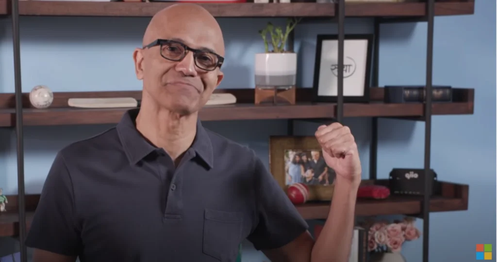

Satya Nadella stellt qiios q200 Guardian an seiner Keynote an der Microsoft
Ignite 2020 vor
Zürich 23. September 2020 – Der CEO von Microsoft, Satya Nadella, hat gestern in seiner Keynote Speech an
der diesjährigen Ignite Konferenz den qiio q200 Guardian vorgestellt. Der q200 Guardian wird ab sofort – in
Partnerschaft mit AT&T- für Kunden, welche eine sichere, auf Basis von Microsoft Azure Sphere, globale
Mobilfunk Lösung ihrer IoT-Geräte wünschen, erhältlich sein.
qiios q200 Guardian, wurde gestern von Microsoft-CEO Satya Nadella auf der Microsoft Ignite 2020
vorgestellt. Ignite ist Microsofts weltweite Konferenz für Innovation und Technologie für
IT-EntscheiderInnen, EntwicklerInnen und IT-Profis, welche dieses Jahr erstmals komplett virtuell
stattfindet. In seiner Keynote präsentierte Satya Nadella qiios q200 Guardian, ein auf Microsoft Azure
Sphere basierendes Guardian-Device, welches Geräte weltweit, hochsicher und skalierbar über Mobilfunk
verbindet und so WiFi-Anforderungen zu umgehen vermag.
Durch eine kurze Handbewegung zeigte Nadella, dass der qiio q200 Guardian einen festen Platz in seinem
Büchergestell eingenommen hat – siehe
Der q200 Guardian wird ab sofort in den U.S.A über AT&T erhältlich sein.
Zu qiio
Die qiio AG, Schweizer Startup mit Sitz in Zürich wurde vom ETH-Absolventen und Elektroingenieur Felix
Adamczyk gegründet. qiios hochsichere IoT-Lösung auf Basis von Azure Sphere verbindet Hardware,
Konnektivität und Cloud Services und integriert sich nahtlos in bestehende IoT-Anwendungen.
Die Produkte sind derzeit die weltweit ersten sicheren Mobilfunklösungen auf der Basis von Microsoft Azure
Sphere.